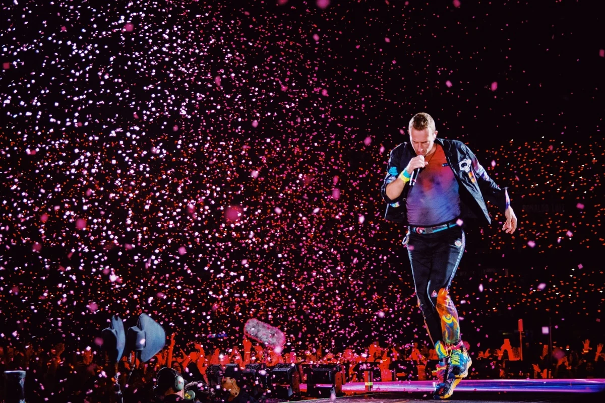
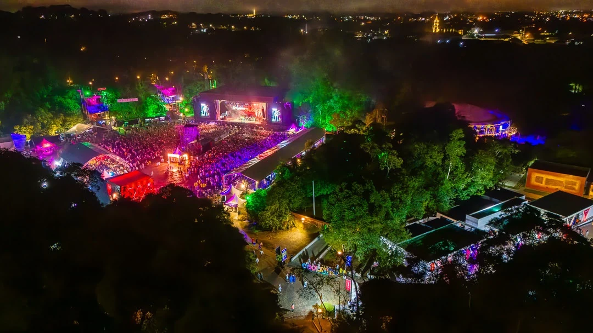
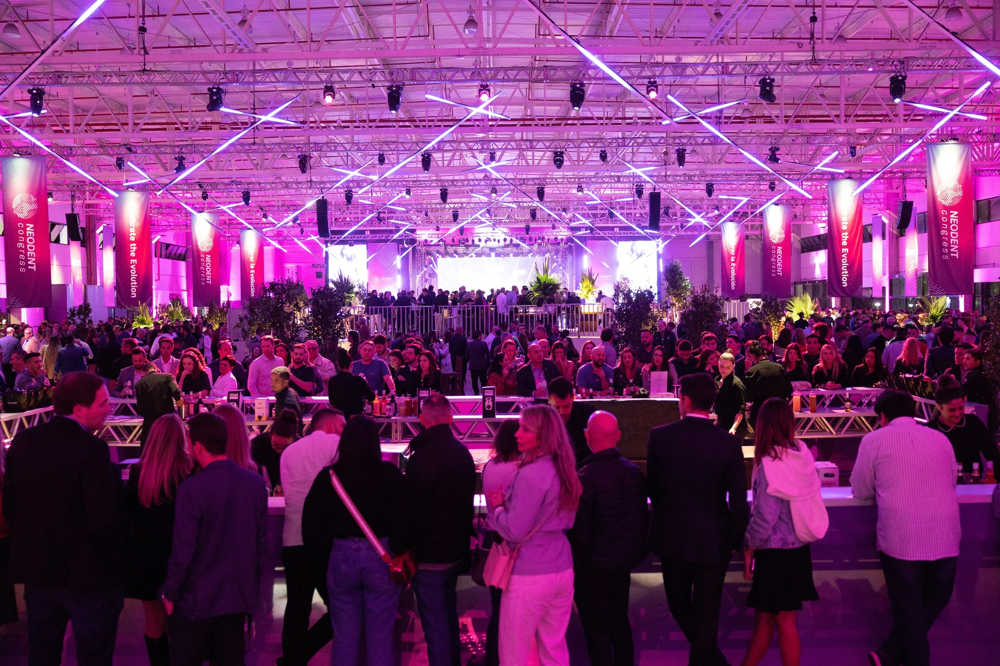
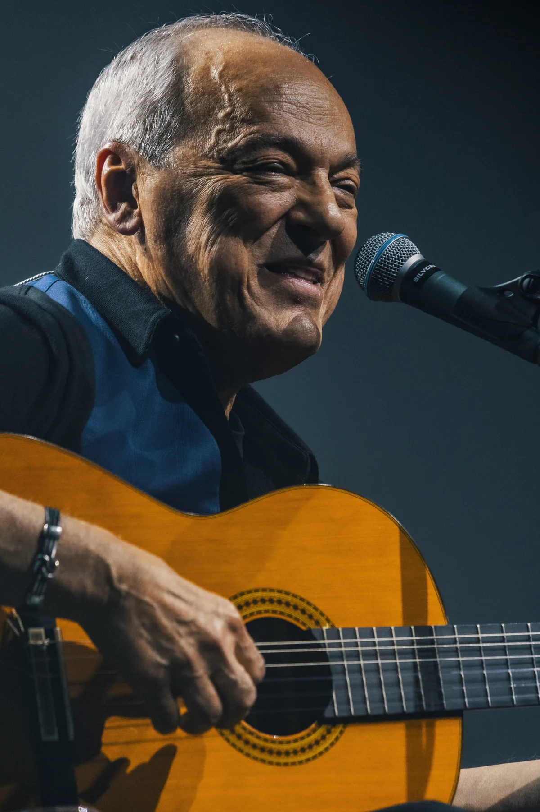
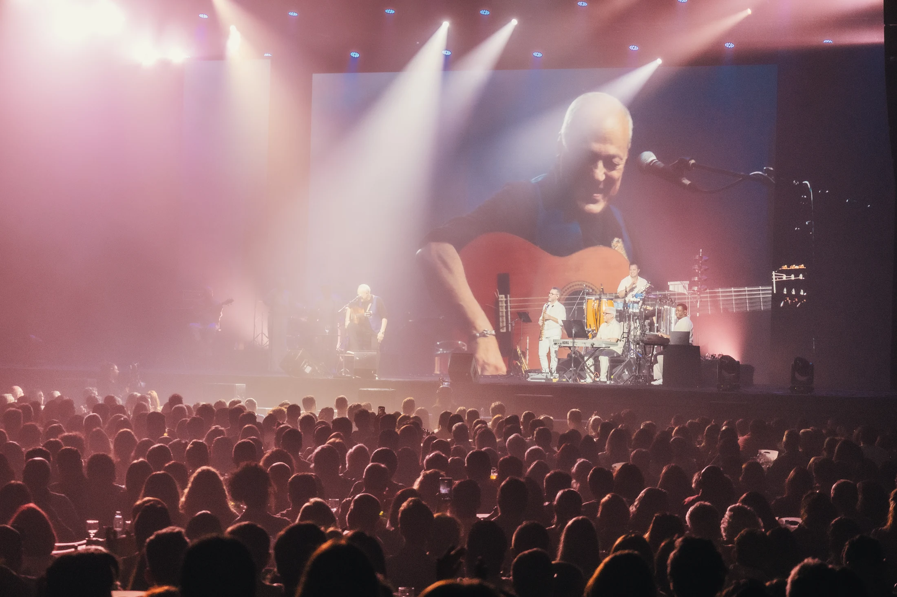
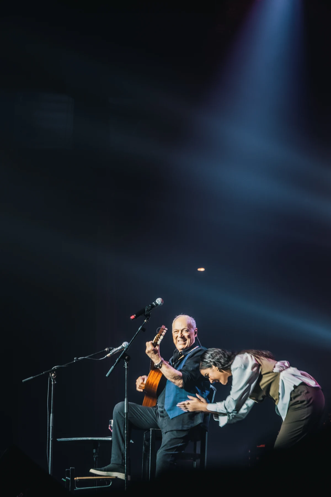
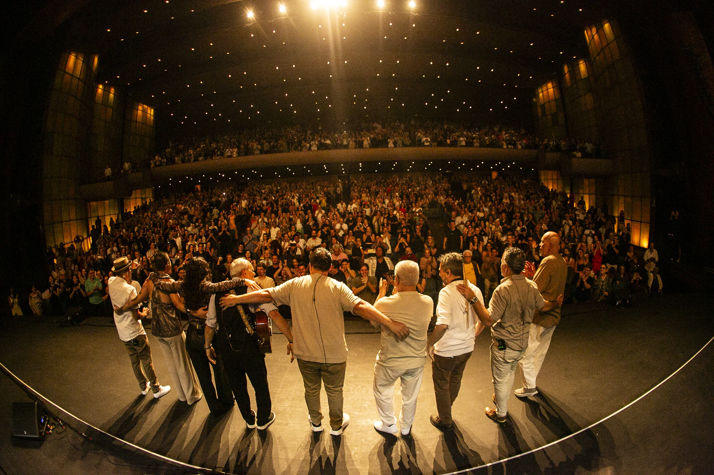

Antes do primeiro acorde
Um filme de abertura recupera momentos marcantes e prepara a entrada de Toquinho.
Há mais de 15 anos, a SevenX produz shows e festivais. Atua em curadoria artística, booking, patrocínios e projetos 360, da criação à operação.

Planejamento e operação local para a Live Nation no Estádio Couto Pereira, em Curitiba.

Festival criado pela SevenX em 2017, com música, cultura e experiências de marca na Pedreira Paulo Leminski.

Direção criativa, ambientação e produção com a Be Live Marketing, em uma noite com Thiaguinho no palco.
Com a Level Up e a equipe de Toquinho, a SevenX propõe produzir uma turnê pelos 80 anos do artista e reunir diferentes gerações em torno de suas canções.
A partir dela, a parceria pode levar o repertório infantil ao palco, ampliar a presença em festivais e criar projetos com marcas.

Infinitas histórias.
Toquinho completou 80 anos em 2026. Para 2027, a proposta é reunir o artista e seu público numa turnê pelos teatros e espaços culturais do Brasil.
Um espetáculo íntimo em que o violão, as imagens de arquivo e as histórias de Toquinho convidam o público a cantar junto.

Um filme de abertura recupera momentos marcantes e prepara a entrada de Toquinho.
Fotografias e imagens de arquivo acompanham as canções e trazem suas histórias de volta ao palco.
O show pode incluir um momento especial pelos 80 anos, a ser definido com a equipe artística.
A proposta prevê quatro apresentações especiais com artistas de diferentes gerações no palco com Toquinho. Os convidados serão definidos pela afinidade com a obra e pela relação com cada região, com aprovação da Level Up.

Teatros e espaços culturais para aproximadamente 2.000 a 5.000 espectadores, conforme o potencial de cada cidade.
Os 80 anos abrem espaço para propor entrevistas e pautas em TV aberta e fechada, imprensa, rádio, podcasts e plataformas digitais.
Bastidores, depoimentos e momentos dos shows podem alimentar a comunicação da turnê e dar origem a um registro audiovisual comemorativo.
A partir da turnê dos 80 anos, a SevenX propõe três frentes para ampliar a presença da obra de Toquinho em novos formatos e junto a novos públicos.
Um show especial para crianças e famílias a partir de Aquarela, O Caderno, O Pato e outras canções do repertório infantil. O formato pode seguir em uma pequena turnê.
Prospecção de shows, festivais e oportunidades comerciais. A SevenX avalia a viabilidade, conduz negociações e trâmites contratuais e coordena a produção dos projetos aprovados.
Patrocínios, campanhas, experiências e projetos especiais com marcas que tenham afinidade com sua obra. A SevenX conduz a prospecção, a criação e a execução das propostas aprovadas.

O próximo passo é definir as prioridades da turnê e avaliar, em conjunto, a viabilidade de cada frente do Toquinho 360.